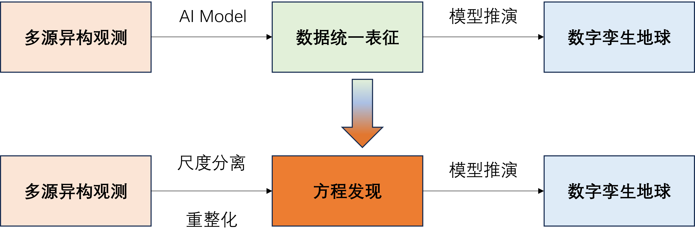

探索地球的红外视角
利用先进的遥感技术和算法模型，重构分析地球表面的红外数据，为科研、环保和资源管理提供支持。
关于红外地球平台
红外地球是一个专注于红外极端事件演化与分析的专业平台，由多尺度红外预警卓越群体项目团队共同开发。
简单三步，完成专业处理
选择数据
与国家青藏高原气象数据中心、国家气象局数据中心等机构建立合作关系，平台拥有丰富的数据资源。
配置算法
根据多尺度理论研究，选择合适的处理算法，并配置相应的参数。
获取结果
查看、分析和下载处理结果，支持多种格式导出。

应用场景

杜苏芮超强台风 (2023)
基于ERA5数据集，利用Aurora模型处理，用于海洋环境监测和气候变化研究。

缅甸地震 (2025)
通过风云卫星的热红外产品数据分析地震应力，用于城市板块演化与地震预警研究。

全球舰船检测 (2023)
基于Landsat和SDG-1卫星影像双尺度数据，实时追踪全球范围内的船舶航迹，用于态势预警和应急响应。